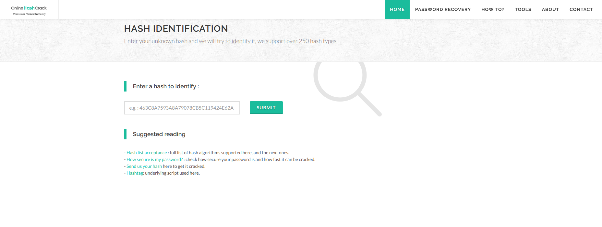

Identifying and Cracking Hashes
Description
During a penetration test or a simple CTF, you might come across with different hashes. In the first section, I’d like to show you some tools that can help you identify them. After you have identified the hash, you probably want to crack it. That’s why I wrote the cracking sections in cheatsheet style. I hope you like it!
Identifying different hashes
The hash-identifier
There quite a few tools out there that can help you identify hashes. Which one is the best? Hard to say. Kali comes with at least 2 hash identifier tool that I know about. The first one is hash-identifier. The usage is very simple:
root@kali:~# hash-identifier
-------------------------------------------------------------------------
HASH: 48bb6e862e54f2a795ffc4e541caed4d
Possible Hashs:
[+] MD5
[+] Domain Cached Credentials - MD4(MD4(($pass)).(strtolower($username)))
Least Possible Hashs:
[+] RAdmin v2.x
[+] NTLM
[+] MD4
[+] MD2
[+] MD5(HMAC)
[+] MD4(HMAC)
[+] MD2(HMAC)
[+] MD5(HMAC(Wordpress))
[+] Haval-128
[+] Haval-128(HMAC)
[+] RipeMD-128
[+] RipeMD-128(HMAC)
[+] SNEFRU-128
[+] SNEFRU-128(HMAC)
[+] Tiger-128
[+] Tiger-128(HMAC)
[+] md5($pass.$salt)
[+] md5($salt.$pass)
[+] md5($salt.$pass.$salt)
[+] md5($salt.$pass.$username)
[+] md5($salt.md5($pass))
[+] md5($salt.md5($pass))
[+] md5($salt.md5($pass.$salt))
[+] md5($salt.md5($pass.$salt))
[+] md5($salt.md5($salt.$pass))
[+] md5($salt.md5(md5($pass).$salt))
[+] md5($username.0.$pass)
[+] md5($username.LF.$pass)
[+] md5($username.md5($pass).$salt)
[+] md5(md5($pass))
[+] md5(md5($pass).$salt)
[+] md5(md5($pass).md5($salt))
[+] md5(md5($salt).$pass)
[+] md5(md5($salt).md5($pass))
[+] md5(md5($username.$pass).$salt)
[+] md5(md5(md5($pass)))
[+] md5(md5(md5(md5($pass))))
[+] md5(md5(md5(md5(md5($pass)))))
[+] md5(sha1($pass))
[+] md5(sha1(md5($pass)))
[+] md5(sha1(md5(sha1($pass))))
[+] md5(strtoupper(md5($pass)))
As you can see the hash is probably MD5 or Domain Cached Credentials, but besides these, the tool also prints least possible hashes.
The hashid
The other tool is hashid, which has a little more functionality. The best thing about this tool is that it can print the corresponding hashcat mode code and john format.
root@kali:~# hashid -m -j '48bb6e862e54f2a795ffc4e541caed4d'
Analyzing '48bb6e862e54f2a795ffc4e541caed4d'
[+] MD2 [JtR Format: md2]
[+] MD5 [Hashcat Mode: 0][JtR Format: raw-md5]
[+] MD4 [Hashcat Mode: 900][JtR Format: raw-md4]
[+] Double MD5 [Hashcat Mode: 2600]
[+] LM [Hashcat Mode: 3000][JtR Format: lm]
[+] RIPEMD-128 [JtR Format: ripemd-128]
[+] Haval-128 [JtR Format: haval-128-4]
[+] Tiger-128
[+] Skein-256(128)
[+] Skein-512(128)
[+] Lotus Notes/Domino 5 [Hashcat Mode: 8600][JtR Format: lotus5]
[+] Skype [Hashcat Mode: 23]
[+] Snefru-128 [JtR Format: snefru-128]
[+] NTLM [Hashcat Mode: 1000][JtR Format: nt]
[+] Domain Cached Credentials [Hashcat Mode: 1100][JtR Format: mscach]
[+] Domain Cached Credentials 2 [Hashcat Mode: 2100][JtR Format: mscach2]
[+] DNSSEC(NSEC3) [Hashcat Mode: 8300]
[+] RAdmin v2.x [Hashcat Mode: 9900][JtR Format: radmin]
I provided the same as in the previous example, but the first possible hash is MD2 and only the second is correct. It’s a small price to pay, but still… you might have to try 3-5 type until one of them is correct and trust me it’s not a quick process with a large dictionary.
The HashTag
The third tool is not in Kali’s repository, you can find it on Github: https://github.com/SmeegeSec/HashTag HashTag supports the identification of over 250 hash types along with matching them to over 110 hashcat modes. The only downside is, it was created 5 years ago and hasn’t been updated/maintained since.
root@kali:~# python HashTag.py -sh '48bb6e862e54f2a795ffc4e541caed4d'
Hash: 48bb6e862e54f2a795ffc4e541caed4d
[*] MD5 - Hashcat Mode 0
[*] NTLM - Hashcat Mode 1000
[*] MD4 - Hashcat Mode 900
[*] LM - Hashcat Mode 3000
[*] RAdmin v2.x
[*] Haval-128
[*] MD2
[*] RipeMD-128
[*] Tiger-128
[*] Snefru-128
[*] MD5(HMAC)
[*] MD4(HMAC)
[*] Haval-128(HMAC)
[*] RipeMD-128(HMAC)
[*] Tiger-128(HMAC)
[*] Snefru-128(HMAC)
[*] MD2(HMAC)
[*] MD5(ZipMonster)
[*] MD5(HMAC(Wordpress))
[*] Skein-256(128)
[*] Skein-512(128)
[*] md5($pass.$salt) - Hashcat Mode 10
[*] md5($pass.$salt.$pass)
[*] md5($pass.md5($pass))
[*] md5($salt.$pass) - Hashcat Mode 20
[*] md5($salt.$pass.$salt) - Hashcat Mode 3810
[*] md5($salt.$pass.$username)
[*] md5($salt.'-'.md5($pass))
[*] md5($salt.md5($pass)) - Hashcat Mode 3710
[*] md5($salt.md5($pass).$salt)
[*] md5($salt.MD5($pass).$username)
[*] md5($salt.md5($pass.$salt)) - Hashcat Mode 4110
[*] md5($salt.md5($salt.$pass)) - Hashcat Mode 4010
[*] md5($salt.md5(md5($pass).$salt))
[*] md5($username.0.$pass) - Hashcat Mode 4210
[*] md5($username.LF.$pass)
[*] md5($username.md5($pass).$salt)
[*] md5(1.$pass.$salt)
[*] md5(3 x strtoupper(md5($pass)))
[*] md5(md5($pass)), Double MD5
[*] md5(md5($pass).$pass)
[*] md5(md5($pass).$salt), vBulletin < v3.8.5
[*] md4($salt.$pass)
[*] md4($pass.$salt)md5(md5($pass).md5($pass))
[*] md5(md5($pass).md5($salt)) - Hashcat Mode 3910
[*] md5(md5($salt).$pass) - Hashcat Mode 3610
[*] md5(md5($salt).md5($pass))
[*] md5(md5($username.$pass).$salt)
[*] md5(md5(base64_encode($pass)))
[*] md5(md5(md5($pass))) - Hashcat Mode 3500
[*] md5(md5(md5(md5($pass))))
[*] md5(md5(md5(md5(md5($pass)))))
[*] md5(sha1($pass)) - Hashcat Mode 4400
[*] md5(sha1(base64_encode($pass)))
[*] md5(sha1(md5($pass)))
[*] md5(sha1(md5($pass)).sha1($pass))
[*] md5(sha1(md5(sha1($pass))))
[*] md5(strrev($pass))
[*] md5(strrev(md5($pass)))
[*] md5(strtoupper(md5($pass))) - Hashcat Mode 4300
[*] md5(strtoupper(md5(strtoupper(md5(strtoupper(md5($pass)))))))
[*] strrev(md5($pass))
[*] strrev(md5(strrev(md5($pass))))
[*] 6 x md5($pass)
[*] 7 x md5($pass)
[*] 8 x md5($pass)
[*] 9 x md5($pass)
[*] 10 x md5($pass)
[*] 11 x md5($pass)
[*] 12 x md5($pass)
This time the hash type is correct and we also got the hashcat mode number. I prefer working from a terminal, but in case you are not there is an excellent site, where you can identify and also crack hashes. The site uses the same script, so you should get the exact same result. Link: https://www.onlinehashcrack.com/ The hash identifier is under Tools -> Other -> Hash identification.

Cracking different hashes
Another great site is https://crackstation.net/, where you can check your hash against their pre-computed lookup tables. These sites are quite good, quick and some of them don’t even require the hash type just the hash.
Linux passwords
Let’s say, you acquired root access to a Linux server. That’s all cool, but you want to know how secure are the passwords used on the box. In order to match the usernames with the cracked passwords, you’ll need the /etc/shadow and the /etc/passwd file. The unshadow command basically combines the data of these two files and creates a third one username and password details. The usage:
unshadow passwd_file shadow_file > crack_me
Now, we can use john crack the passwords.
john crack_me
If you don’t specify a wordlist, it’ll use the default one. It’s alright for easy passwords, but I recommend using something bigger like rockyou.txt. Anyway, we can use the --show switch with the file name to see the cracked passwords like this:
john --show crack_me
NTLM hashes
NTLM hashes are old and shouldn’t be used, but I wanted to include something Windows related. Let’s assume you have successfully extracted some NTLM hashes with Cain and Abel. You could use john for this with john --format=nt hashes.txt as well, but this time let’s use hashcat to broaden our knowledge.
$ ./hashcat64.exe -m 1000 hash.txt rockyou.txt
hashcat (v5.1.0) starting...
OpenCL Platform #1: NVIDIA Corporation
======================================
* Device #1: GeForce GTX 1070 Ti, 2048/8192 MB allocatable, 19MCU
Hashes: 2 digests; 2 unique digests, 1 unique salts
Bitmaps: 16 bits, 65536 entries, 0x0000ffff mask, 262144 bytes, 5/13 rotates
Rules: 1
Applicable optimizers:
* Zero-Byte
* Early-Skip
* Not-Salted
* Not-Iterated
* Single-Salt
* Raw-Hash
Minimum password length supported by the kernel: 0
Maximum password length supported by the kernel: 256
Watchdog: Temperature abort trigger set to 90c
Dictionary cache hit:
* Filename..: rockyou.txt
* Passwords.: 14344384
* Bytes.....: 139921497
* Keyspace..: 14344384
427f638942987bcbeb98697797d95426:sesame
363dd639ad34b6c5153c0f51165ab830:crackme
Session..........: hashcat
Status...........: Cracked
Hash.Type........: NTLM
Hash.Target......: hash.txt
Guess.Base.......: File (rockyou.txt)
Guess.Queue......: 1/1 (100.00%)
Speed.#1.........: 46867.1 kH/s (3.46ms) @ Accel:1024 Loops:1 Thr:64 Vec:1
Recovered........: 2/2 (100.00%) Digests, 1/1 (100.00%) Salts
Progress.........: 1245184/14344384 (8.68%)
Rejected.........: 0/1245184 (0.00%)
Restore.Point....: 0/14344384 (0.00%)
Restore.Sub.#1...: Salt:0 Amplifier:0-1 Iteration:0-1
Candidates.#1....: 123456 -> swethy
Hardware.Mon.#1..: Temp: 49c Fan: 0% Util: 21% Core:1607MHz Mem:3802MHz Bus:16
Cracking SSH keys
We need to convert the private SSH key into a new format that john understands.
ssh2john id_rsa > crack_me
Now, just supply the new file to john as a parameter.
john crack_me
RAR and ZIP passwords
This method is very similar to the previous one, but here we extract hashes from a zip or rar file.
rar2john file.rar > crack_me
zip2john file.zip > crack_me
After we have the file containing the hash, we run john directly on it.
john crack_me
If zip2john doesn’t yield success, you can try to perform a dictionary attack with fcrackzip. It’s a very handy tool and has many command line options. Here, I used -v (verbose output), -D (use a dictionary), -u (use unzip to weed out wrong passwords) and finally -p, which means we are using a password file.
fcrackzip -v -D -u -p /usr/share/wordlists/rockyou.txt file.zip
Blowfish hashes
Sometimes, Capture The Flag games try to make you struggle by choosing a type hash that can’t be found on online cracking sites or not really conventional.
Once, I was faced with the following hash: $2y$12$Dwt1BZj6pcyc3Dy1FWZ5ieeUznr71EeNkJkUlypTsgbX1H68wsRom I couldn’t determine the type of the hash just by looking at it and this is where the importance of hash identification comes into place. With the correct information, the rest is exactly the same with NTLM hashes, except the hashcat mode of course.
$ ./hashcat64.exe -m 3200 hash.txt rockyou.txt
hashcat (v5.1.0) starting...
OpenCL Platform #1: NVIDIA Corporation
======================================
* Device #1: GeForce GTX 1070 Ti, 2048/8192 MB allocatable, 19MCU
Hashes: 1 digests; 1 unique digests, 1 unique salts
Bitmaps: 16 bits, 65536 entries, 0x0000ffff mask, 262144 bytes, 5/13 rotates
Rules: 1
Applicable optimizers:
* Zero-Byte
* Single-Hash
* Single-Salt
Watchdog: Temperature abort trigger set to 90c
Dictionary cache built:
* Filename..: rockyou.txt
* Passwords.: 14344391
* Bytes.....: 139921497
* Keyspace..: 14344384
* Runtime...: 1 sec
Session..........: hashcat
Status...........: Running
Hash.Type........: bcrypt $2*$, Blowfish (Unix)
Hash.Target......: $2y$12$Dwt1BZj6pcyc3Dy1FWZ5ieeUznr71EeNkJkUlypTsgbX...8wsRom
Guess.Base.......: File (rockyou.txt)
Guess.Queue......: 1/1 (100.00%)
Speed.#1.........: 111 H/s (5.24ms) @ Accel:8 Loops:2 Thr:8 Vec:1
Recovered........: 0/1 (0.00%) Digests, 0/1 (0.00%) Salts
Progress.........: 3648/14344384 (0.03%)
Rejected.........: 0/3648 (0.00%)
Restore.Point....: 3648/14344384 (0.03%)
Restore.Sub.#1...: Salt:0 Amplifier:0-1 Iteration:2606-2608
Candidates.#1....: 19871987 -> daryl
Hardware.Mon.#1..: Temp: 47c Fan: 0% Util: 98% Core:1873MHz Mem:3802MHz Bus:16
[s]tatus [p]ause [b]ypass [c]heckpoint [q]uit =>
Session..........: hashcat
Status...........: Running
Hash.Type........: bcrypt $2*$, Blowfish (Unix)
Hash.Target......: $2y$12$Dwt1BZj6pcyc3Dy1FWZ5ieeUznr71EeNkJkUlypTsgbX...8wsRom
Guess.Base.......: File (rockyou.txt)
Guess.Queue......: 1/1 (100.00%)
Speed.#1.........: 110 H/s (5.28ms) @ Accel:8 Loops:2 Thr:8 Vec:1
Recovered........: 0/1 (0.00%) Digests, 0/1 (0.00%) Salts
Progress.........: 170240/14344384 (1.19%)
Rejected.........: 0/170240 (0.00%)
Restore.Point....: 170240/14344384 (1.19%)
Restore.Sub.#1...: Salt:0 Amplifier:0-1 Iteration:1752-1754
Candidates.#1....: ketzal -> hateguys
Hardware.Mon.#1..: Temp: 56c Fan: 27% Util: 98% Core:1860MHz Mem:3802MHz Bus:16
$2y$12$Dwt1BZj6pcyc3Dy1FWZ5ieeUznr71EeNkJkUlypTsgbX1H68wsRom:bleh
Session..........: hashcat
Status...........: Cracked
Hash.Type........: bcrypt $2*$, Blowfish (Unix)
Hash.Target......: $2y$12$Dwt1BZj6pcyc3Dy1FWZ5ieeUznr71EeNkJkUlypTsgbX...8wsRom
Guess.Base.......: File (rockyou.txt)
Guess.Queue......: 1/1 (100.00%)
Speed.#1.........: 110 H/s (5.29ms) @ Accel:8 Loops:2 Thr:8 Vec:1
Recovered........: 1/1 (100.00%) Digests, 1/1 (100.00%) Salts
Progress.........: 175104/14344384 (1.22%)
Rejected.........: 0/175104 (0.00%)
Restore.Point....: 173888/14344384 (1.21%)
Restore.Sub.#1...: Salt:0 Amplifier:0-1 Iteration:4094-4096
Candidates.#1....: bnasty -> ROSES
Hardware.Mon.#1..: Temp: 56c Fan: 27% Util: 98% Core:1860MHz Mem:3802MHz Bus:16
My goal here was not to list all the hashes but to give you an understanding of how to identify hashes and plan your next move after that. You can find sample hashes and dumps online or even better generate your own and try to crack it. Experiment with different types of hashes and hashcat modes. Read the man page of john and hashcat to see what else they can do. The best way to learn is by doing!
Before you go
If you found this article helpful, please share to help others with similar interest find it! + Feedbacks and donations are always welcome!